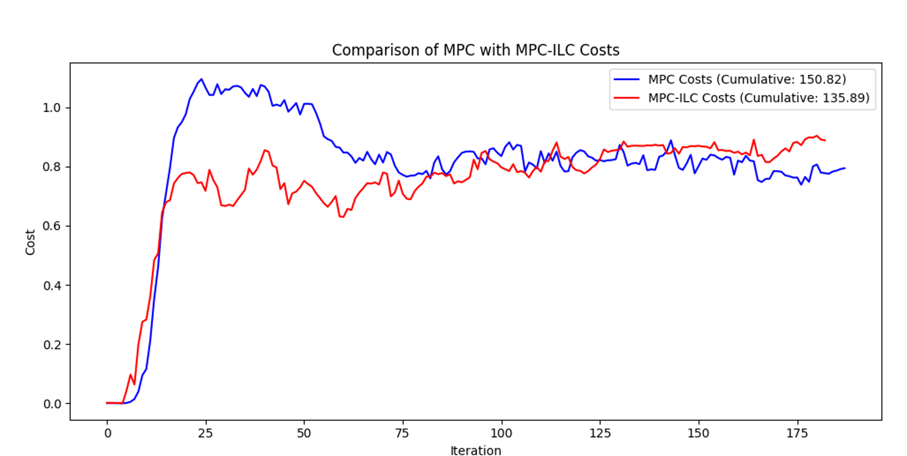
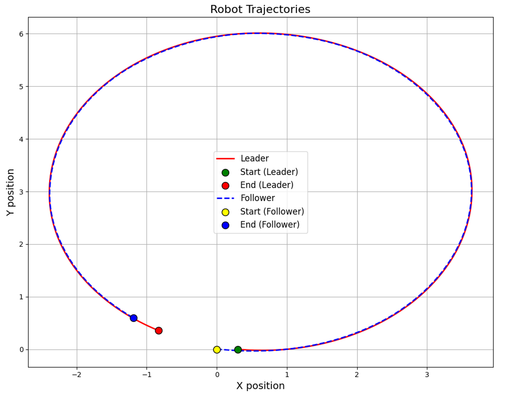
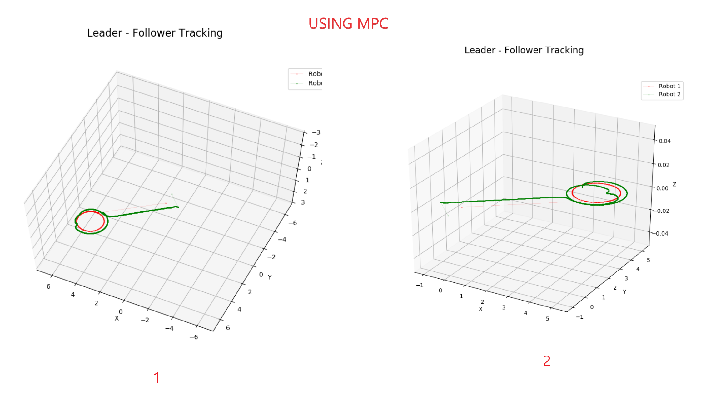
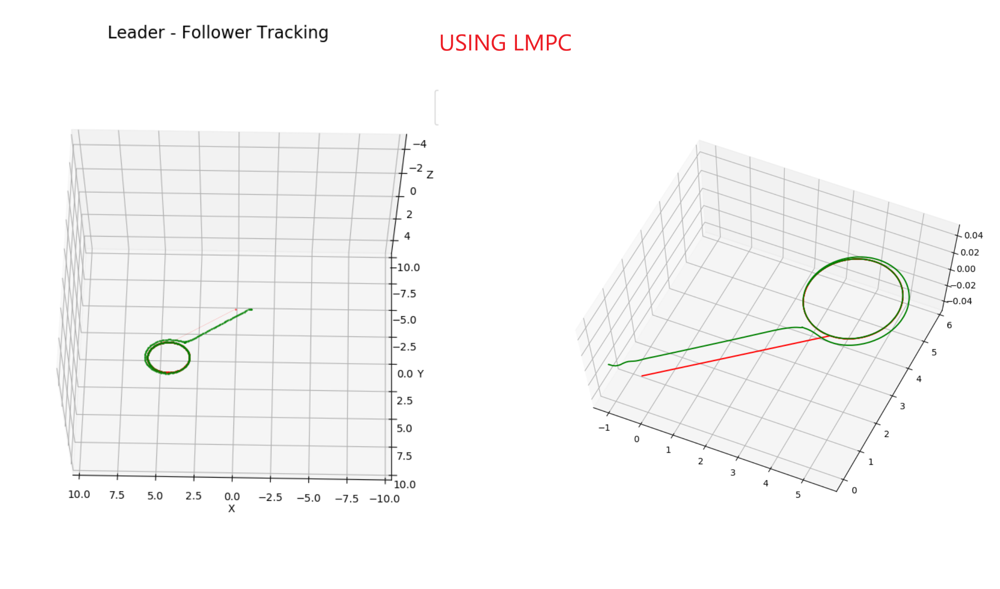
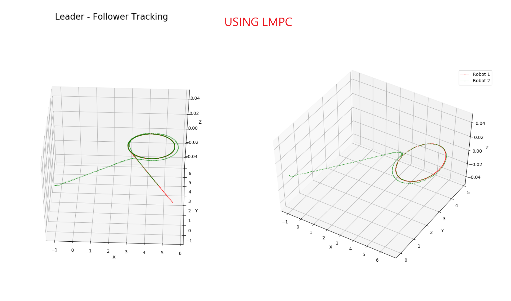
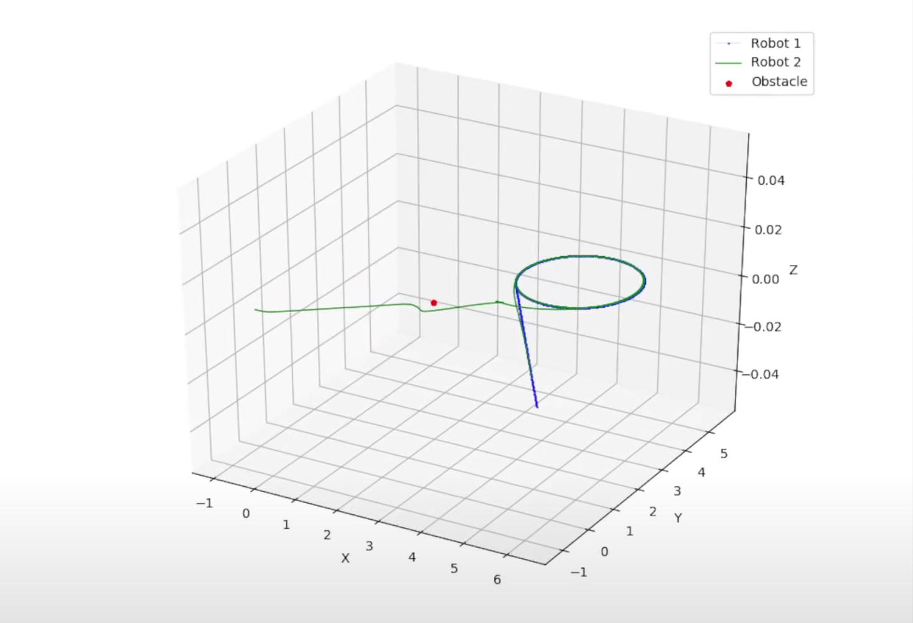

Hybrid Model Predictive and Iterative Learning Control for Enhanced Leader-Follower Robotic Tracking#
EERC paper
Tested for “S” Trajectory#
Abstract#
This paper introduces a novel hybrid control strategy combining Model Predictive Control (MPC) and Iterative Learning Control (ILC) to improve leader-follower tracking accuracy and robustness in mobile robots. MPC optimizes control inputs over a predictive horizon by minimizing a cost function, while ILC refines these inputs by learning from past errors.
Mathematical Formulation#
System Dynamics#
The state of the follower robot is:
Control inputs:
Discrete-time kinematic model:
Where \(T\) is the sampling time.
MPC Cost Function#
The MPC minimizes the following cost function over a finite horizon \(N\):
where:
\(P_f(k) = [x_f(k), y_f(k)]^T\): position of follower.
\(P_d(k), \theta_d(k)\): desired position and orientation.
\(\omega_p, \omega_\theta, \omega_u\): weights for position, orientation errors, and control effort.
Desired Position Calculation#
The desired position \(P_d\) is calculated from the leader’s state \(x_l = [x_l, y_l, \theta_l]^T\) and specified distance \(d\):
Iterative Learning Control (ILC) Update#
Error vector:
ILC control update:
where:
\(\nu_{MPC}(k)\): optimal MPC control input.
\(L\): learning matrix.
\(e(k-1)\): error from previous iteration.
Hybrid Integration#
The hybrid method combines MPC and ILC:
Solve MPC optimization: \(\nu_{MPC}=\arg\min J\)
ILC update: \(\nu=\nu_{ILC}\)
Apply \(\nu\) to follower robot
Update follower and leader states
Algorithm#
Algorithm 1: Hybrid MPC-ILC
Require: Initial states x_f, x_l; past error e_past=0, past input u_past=0
Require: T, N, ω_p, ω_θ, ω_u, d, L
While true:
1. Obtain current leader state x_l(k)
2. Compute desired P_d(k), θ_d(k)
3. Solve MPC to get u_MPC
4. Calculate tracking error e(k)
5. Update control: u_ILC = u_past + L(e(k)-e_past)
6. Apply u_ILC to follower
7. Update u_past = u_MPC, e_past = e(k)
8. Update robot states
End While
Experimental Results#
Experiments with TurtleBot 3 robots validated the hybrid MPC-ILC method, demonstrating significant improvements in position tracking accuracy, orientation accuracy, and balanced control efforts compared to standalone MPC and ILC.
Leader velocity: \(v=0.3\,\text{m/s}, \omega=0.3\,\text{rad/s}\)
MPC parameters: \(N=20, T=0.2\,s, \omega_p=7, \omega_\theta=1, \omega_u=1\)
ILC learning matrix: \(L = \mathrm{diag}([0.1, 0.1])\)


Conclusion#
The hybrid MPC-ILC approach offers improved accuracy, robustness, and efficiency for leader-follower robotic tracking. Future work includes integrating with advanced control methods and testing in more complex scenarios.
Comparison between MPC and LMPC and Obstacle Avoidance#
We included a safe set process to keep the follower robot at a fixed distance from the leader robot, and then we added obstacle avoidance to the follower robot using LMPC.
Testing With MPC#

Testing with LMPC#



Results#